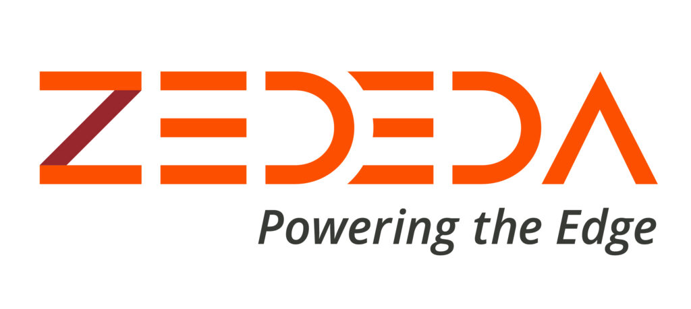

Publications
-
Roja Eswaran, Mingjie Yan, Kartik Gopalan Template-aware Live Migration of Virtual Machines, In The Eighth ACM/IEEE Symposium on Edge Computing (SEC ’23) EdgeComm. Delaware, December 2023 [paper] [bibtex]
-
Roja Eswaran, Mingjie Yan, Kartik Gopalan Tackling Memory Footprint Expansion During Live Migration of Virtual Machines, IEEE/ACM international Symposium on Cluster, Cloud and Internet Computing (CCGrid). Philadelphia, May 2024 [paper] [bibtex]
- Roja Eswaran, Mingjie Yan, Kartik Gopalan Incorporating Memory Sharing-Awareness in Multi-VM Live Migration, IEEE/ACM international Symposium on Cluster, Cloud and Internet Computing (CCGrid). Philadelphia, May 2024 [paper] [bibtex]